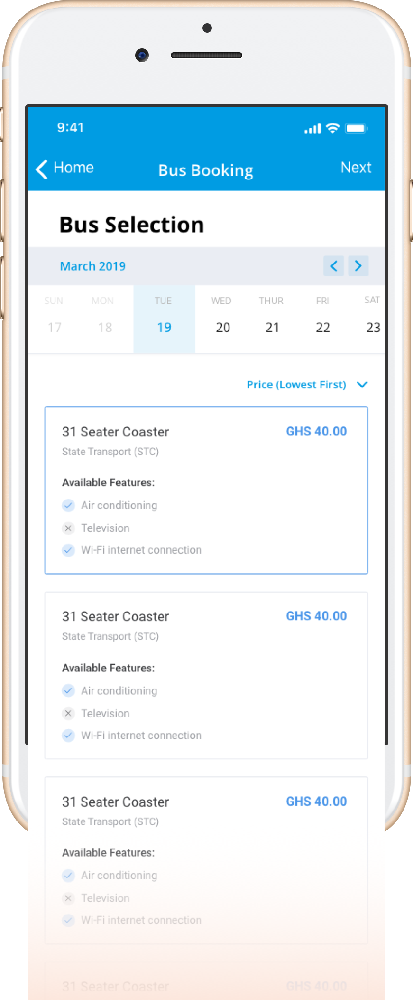

Whitewind Company Ltd.
Product Designer
April 2018 - June 2018
Travel by road is the most used mode of getting from one city to another. Relatively few people use airlines to go from the South to the North and vice versa. Air travel is significantly more expensive and more convenient than using commuter coaches. A lot of the convenience has less to do with the actual modes of transport but rather the processes of organising a trip. Local airlines allow customers to book tickets online, and in advance, and are able to communicate dates and times clearly. However, with the major road transport companies, booking is typically done at the station and seats are assigned on a first come first serve basis.
As sa product designer, my role was to design an application that helped travellers book tickets with their preferred companies from the convenience of their phones.
Above is an image of ...
1. How not to overwhelm them:
Targets people who use their phones for basic activities.Cut waiting time. Trying to bring activities typically performed at bus terminals by different actors to a single mobile phone meant introducing the need for a significant change in user behaviours. Travellers having become accustomed to the current way of doing this will need hand-holding to transition until the benefits are evident. Two approaches, skinning down the application to very basic feature set, simplifying the app to avoid overwhelming content. And allowing them to book on behalf of others. Riding on champions in the travel party. Favour phone numbers over emails. One action at each step.
2. Facilitate decision making:
How to provide them with the information to make the right decision based on price, company, features, to assess value for money. Results Listing page and price filter
Above is an image of ...
3. Joining a trip Enroute:
Saving travellers time and money. Going with a highway, landmark approach over maps.pros and cons.Joining a trip Enroute. Saving travellers time and money. Going with a highway, landmark approach over maps.pros and cons.
Above is a video of ...
In addition there was a web app. Focussing on private rentals.